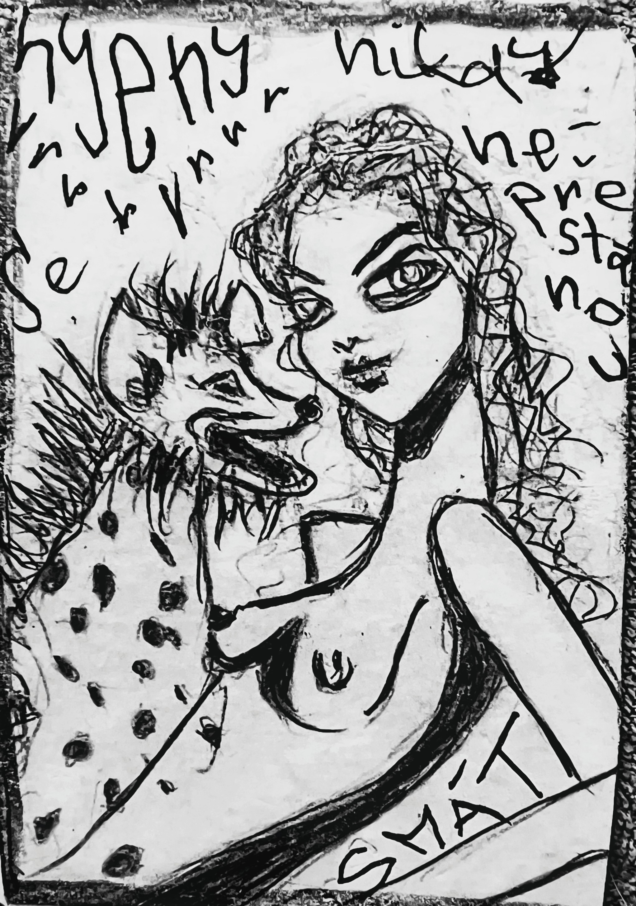

lemur · 210° introspektivní

hyena · 270° groteskní

plameňák · 330° surrealistický

Sociální horor "Pohledy": Hráč v uzavřené komunitě, kde každý neustále sleduje ostatní. "Soutěž pohledů" – musíš se dívat na správné lidi ve správný čas, ale bez jasných pravidel. I malý nepřestupek spustí eskalaci.
"Nikotinové lůno" – prostorový zvuk, kde se pohledy projevují jako zvuky z různých směrů. Nepřestupek je náhlé ticho vnímané jako hrozba. Matka reprezentována kombinací kočičího předení a suchého kašle.
Kontaktní improvizace "Toxická observace": Tanečníci se neustále pozorují. Pohyb je reakcí na pohledy. Nepřestupek – zavření očí – vyvolá agresivnější pohyb skupiny.
"Dohlížitelé" – v malém městečku probíhá soutěž pohledů. Hrdinka udělá prohřešek (podívá se na špatnou osobu) a celé město ji začne vnímat jako hrozbu. Matka kuřačka s kočičíma očima ji špehuje.
Teorie horizontální paranoie: Zkoumá sociální systémy bez centrální autority, kde je kontrola distribuovaná mezi všechny účastníky. Právě tato distribuce vytváří vyšší míru úzkosti a nejistoty. Matka z nikotinu a kočičích očí jako archetyp toxické pečovatelky.
Studenti analyzují, jak funguje "soutěž pohledů" ve školní třídě. Vytvářejí pravidla pro bezpečné prostředí bez toxické kontroly.